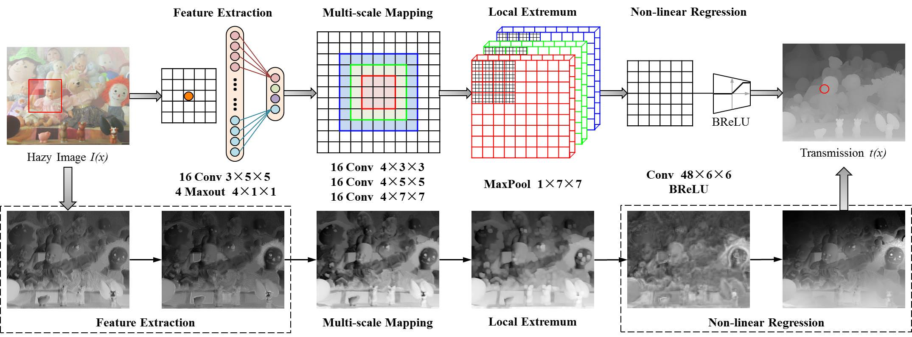
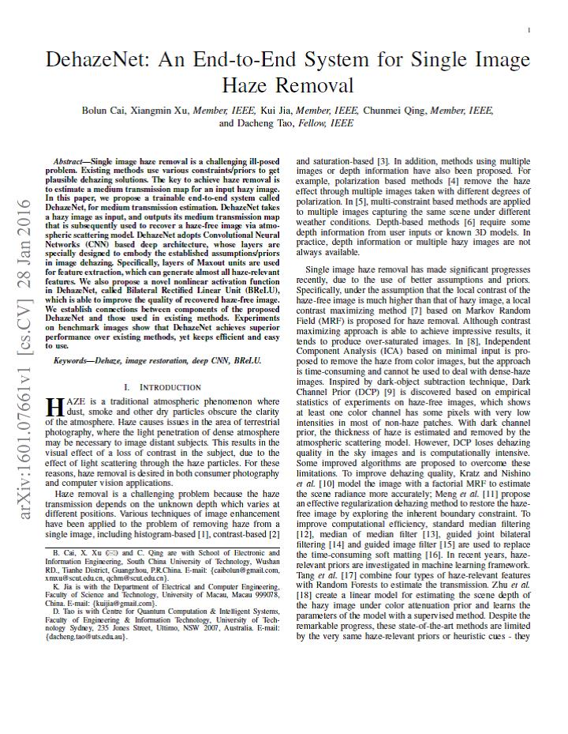

Bolun Cai, Xiangmin Xu, Kui Jia, Chunmei Qing, Dacheng Tao
Preprint arXiv:1601.07661, 2016
Bolun Cai Xiangmin Xu Kui Jia Chunmei Qing Dacheng Tao
South China University of Technology
|  |
The architecture of DehazeNet. DehazeNet conceptually consists of four sequential operations (feature extraction, multi-scale mapping, local extremum and non-linear regression), which is constructed by 3 convolution layers, a max-pooling, a Maxout unit and a BReLU activation function. |
Abstract
Single image haze removal is a challenging ill-posed problem. Existing methods use various constraints/priors to get plausible dehazing solutions. The key to achieve haze removal is to estimate a medium transmission map for an input hazy image. In this paper, we propose a trainable end-to-end system called DehazeNet, for medium transmission estimation. DehazeNet takes a hazy image as input, and outputs its medium transmission map that is subsequently used to recover a haze-free image via atmospheric scattering model. DehazeNet adopts Convolutional Neural Networks (CNN) based deep architecture, whose layers are specially designed to embody the established assumptions/priors in image dehazing. Specifically, layers of Maxout units are used for feature extraction, which can generate almost all haze-relevant features. We also propose a novel nonlinear activation function in DehazeNet, called Bilateral Rectified Linear Unit (BReLU), which is able to improve the quality of recovered haze-free image. We establish connections between components of the proposed DehazeNet and those used in existing methods. Experiments on benchmark images show that DehazeNet achieves superior performance over existing methods, yet keeps efficient and easy to use.
Results

Quantitative Comparison
Downloads
|  |
"DehazeNet: An End-to-End System for Single Image Haze Removal" Bolun Cai, Xiangmin Xu, Kui Jia, Chunmei Qing, Dacheng Tao Preprint arXiv:1601.07661, 2016 |
Last update: April 07, 2016